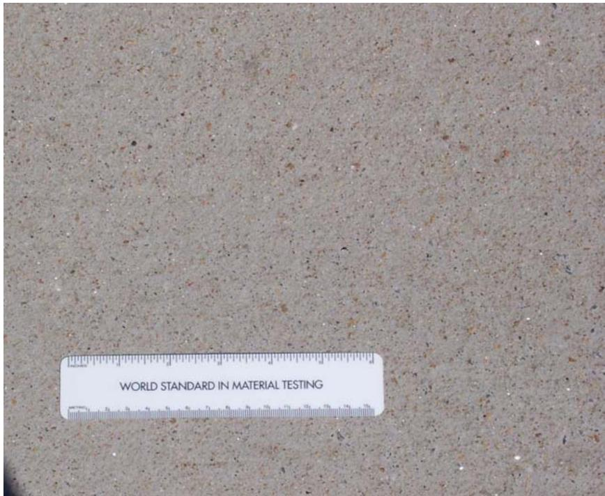
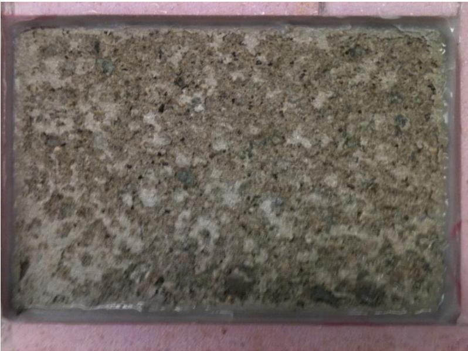
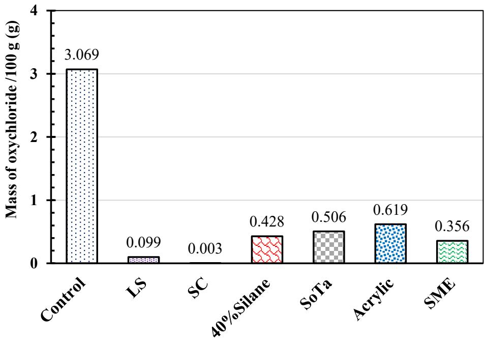
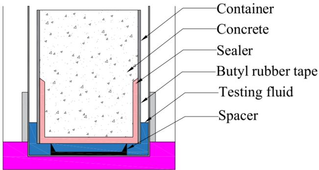
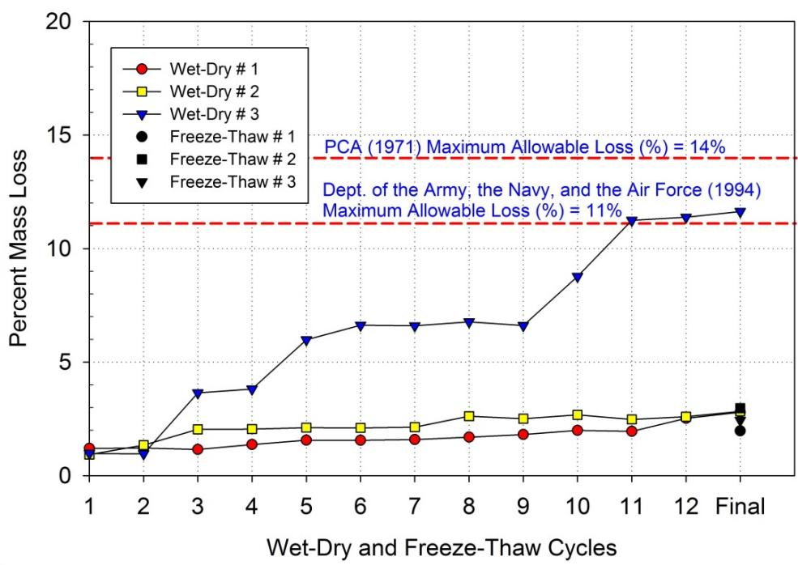
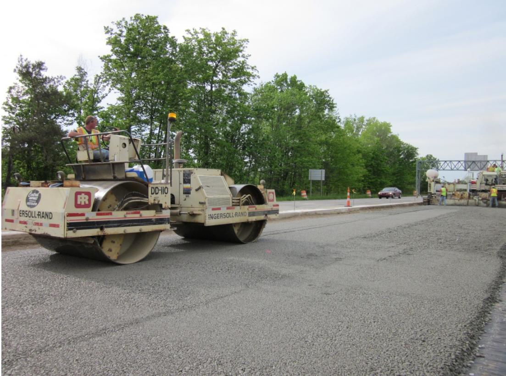
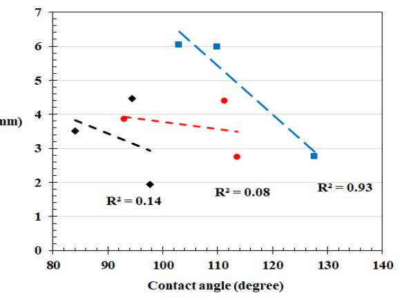

ASTM C672 — Standard Test Method for Scaling Resistance of Concrete Surfaces Exposed to Deicing Chemicals
ASTM C672 is a standard North American laboratory test method used to evaluate the freeze-thaw durability of concrete by quantifying surface scaling caused by cyclic freezing in deicing solutions such as sodium chloride or calcium chloride [2]. The procedure involves exposing specimens to these chemicals and measuring the resulting mass loss after repeated freeze-thaw cycles [1], helping determine the susceptibility of concrete surfaces, which are prone to scaling when exposed to freezing temperatures and deicers [2]. Originally developed for concretes containing only portland cement, this specific measure of durability has been found to be overly aggressive for modern concretes containing supplementary cementing materials (SCMs).
Sources (5)
ASTM C672 Test Procedure
The specimens were prepared as rectangular prisms measuring 300×200×90 mm with a surface area of 0.06 m², followed by brush finishing once bleeding stops. The curing process consisted of 14 days of moist curing (100% RH) and 14 days of drying (50% RH). Testing involved 50 cycles of 24 h, consisting of freezing at -18±3°C for 16±1 h and thawing at 23±2°C for 8±1 h.
Evaluation was conducted through visual assessment (0–5) and mass loss measurement. Acceptance required a cumulative mass loss of <0.8 kg/m² after 50 cycles, which represents the MTO limit. The specimens were also subjected to a 4% CaCl₂ saline solution.
Limitations of Standard Testing
Research by hooton-2012-deicer-scaling found that ASTM C672 does not correlate well with field performance for slag cement concretes, particularly as SCM mixtures take longer to set and develop properties, making standard 14-day curing insufficient. Furthermore, finishing by brushing may damage the air void system at the surface, trapping bleed water, while pre-saturation with saline solution is not required, causing osmotic effects. Field evaluations indicate that bridge deck cores tend to lose more mass during scaling tests than pavement cores, suggesting structural application differences influence test outcomes [1].

Close-up view of Figure 21 showing exposed fine aggregate particles in the slab [1]Petrographic analysis of field cores reveals that construction-related issues, such as retempering and higher-than-expected water-cementitious ratios, often play a larger role in observed scaling performance than slag content [1]. Additionally, submerged curing in saturated lime water without a preceding drying period can increase surface saturation levels, leading to more severe scaling than standard moist curing [2].
 Example of retempering noted via petrographic examination [1]
Example of retempering noted via petrographic examination [1]
A pooled-fund study of 28 field sites evaluated deicer scaling resistance of concrete containing slag cement.
Factors Influencing Scaling Resistance
In ASTM C672 testing, the bulk of mass loss occurs during the first 15 cycles, after which scaling rates typically taper off significantly [2]. While compressive strength shows no direct relationship with deicer scaling resistance, the water-to-cementitious ratio and air void spacing factor are far more critical [2]. Specifically, increasing the air void spacing factor correlates with improved scaling resistance, whereas total air content shows poor correlation with performance in both standard and accelerated curing regimes [3]. Regarding air entrainment, using Vinsol resin typically produces larger air bubbles with higher spacing factors compared to Micro Air® admixtures, which generate smaller bubbles and lower spacing factors [2].

ASTM C672 exposure for Mix #13 (50%LA 50%SG120 0.42w/c) at 25 cycles where coarser sized pieces of scale were observed [2]Performance is also influenced by various environmental and material factors; for instance, concrete mixes exhibiting carbonation depths exceeding 2 mm consistently perform poorly in deicer scaling tests [2]. To mitigate damage, hydrophobic sealers can reduce oxychloride formation by creating a barrier that limits calcium chloride intrusion into the cement paste and pore walls [4]. Additionally, insulating slab sides to enforce one-dimensional freezing drastically reduces scaling by lowering temperature gradients and slowing thawing rates [2]. Conversely, the addition of a geotextile at the bottom of test slabs has no significant effect on scaling performance in low water-to-cement ratio mixtures due to minimal bleeding [2].

presents the amount of potential CaOXY formation in the treated concrete discs immersed in the salt solutions as determined by LT-DSC in accordance with AASHTO T 365. Figure 12. Potential CaOXY formation results [4]Alternative Testing Methods and Standards
Scaling tests on field cores typically use 6-inch diameter specimens with grooved (tined) surfaces sealed with bituminous membrane and plastic berm to contain the deicing solution [1]. While air permeability tests evaluate gas movement rather than liquid movement, they do not correlate well with desaturation rates or the moisture exchange mechanisms critical to scaling resistance [4]; consequently, desaturation testing can serve as an alternative to air permeability tests by directly measuring water exchange mechanisms and evaporation rates from exposed surfaces [4]. Regarding specific methodologies, BNQ NQ 2621-900 uses 3% NaCl instead of 4% CaCl₂, employs no brush finishing, and utilizes geotextile for bleed water. A VDOT accelerated curing option uses 7d 23°C + 21d 38°C submerged curing, while a proposed draft alternative (ASTM WK 9367) based on the BNQ method incorporates wood screed finishing, insulated slab sides, and 7-day pre-saturation. Furthermore, accelerated curing at 73°F for 7 days followed by 21 days at 100°F produces different scaling outcomes compared to standard fog room curing, with poor correlation observed between the two methods when using the alternative test protocol [3].

F-T test setup [4]Other testing considerations include the fact that rapid chloride permeability test results do not directly correlate with salt scaling resistance, as high-permeability mixes can still exhibit excellent scaling performance [2]. In terms of air void characterization, the Super Air Meter (SAM) number provides a method that complements traditional ASTM C457 measurements [4], though the air void analyzer (AVA) technique demonstrates poor correlation with ASTM C 457 spacing factor measurements, indicating limitations in AVA for predicting scaling resistance [3]. Additionally, one-dimensional freezing conditions using saturated magnesium chloride pre-saturation differ from standard ASTM C672 procedures by controlling fluid introduction direction [4].
- ASTM C 666 Procedure A — freeze-thaw testing in water or salt solution; beams rated per ASTM C 672 (1–5 scale)
ASTM C 672 scaling tests on 6 in. diameter field cores showed:
- Only Site 13 (Taconic State Parkway bridge, NY) exceeded 1.5 lb/yd² mass loss (1.95 lb/yd²)
- Bridge deck cores lost more mass than pavement cores
Inter-Laboratory Comparison and Reliability
The ASTM C672 visual assessment scale (0–5) shows poor correlation with mass loss measurements, as specimens can exhibit significant scaling while maintaining high relative dynamic modulus values after localized damage occurs [4]. During the Phase 3 study at Iowa State University, which tested 28 mixtures using both ASTM C672 and a new method [3], there was some correlation between the ASTM C672 and new method results for standard curing (R² = 0.7037) [3]. However, the study also found poor correlation between mass loss and visual rating [3], and ASTM C672 results showed spacing factor was a better predictor of scaling than air content [3].
 Comparison between data from ASTM C 672 and new test methods for standard curing [3]
Comparison between data from ASTM C 672 and new test methods for standard curing [3]
Furthermore, there was poor inter-lab correlation between ISU (Phase 3) and University of Toronto (Phase 2) results for similar mixtures, which is attributed to procedural differences such as curing duration and the drying step [3]. The presence of similar trends but different absolute values across labs indicates that the test is sensitive to laboratory conditions and procedures [3].
 Comparison between data from new test method conducted in two labs for standard curing [3]
Comparison between data from new test method conducted in two labs for standard curing [3]
- Mass change and visual rating as key performance indicators
Cement Treated Base Durability
Cement-treated base (CTB) materials subjected to freeze-thaw cycles demonstrate high durability, with all tested samples showing a percent mass loss of less than 3% after 12 cycles, well below the PCA recommended maximum allowable limit of 14%. [5]

Percent mass loss during wet-dry and freeze-thaw cycles on three CTB samples [5]Key Parameters
This indicates that properly compacted CTB layers provide significant resistance to frost damage in pavement foundation systems. [5]

Compaction of CTB layer [5]Testing Solution Aggressiveness
- Testing in 3% NaCl or CaCl₂ solutions was more aggressive than water
Construction Quality Impact
- 4 of 7 scaling sites showed evidence of retempering — construction quality was more important than slag content
Connections
- Deicing Salt Effects — laboratory test context
- Freeze-Thaw Durability — related durability test
- Ground Granulated Blast-Furnace Slag — slag cement performance in ASTM C672
- hooton-2012-deicer-scaling — Phase 2 evaluation
- taylor-wang-2014-deicer-scaling-resistance-slag — Phase 3 repeatability study
- schlorholtz-2008-deicer-scaling-resistance — Phase 1 field correlation
Rapid chloride permeability test results on field cores range from 590 to 1,580 coulombs passed, though these values do not appear directly related to slag content due to varying concrete ages. [1]
Contact angle measurements on cementitious paste surfaces provide quantitative wettability assessments that correlate with sealer effectiveness against scaling. [4]

Relationship between contact angles and water absorption of coated specimens at 5 hrs and at 15 days [4]References
- S. Schlorholtz and R. D. Hooton, "Deicer Scaling Resistance ... Containing Slag Cement, Phase 1: Site Selection and Analysis of Field Cores," National Concrete Pavement Technology Center, Ames, IA, Rep. TPF-5(100), 2008. [Online]. Available: https://www.cptechcenter.org/wp-content/uploads/2018/03/schlorholtz_deicing_phase1.pdf
- R. D. Hooton and D. Vassilev, "Deicer Scaling Resistance of Concrete Mixtures Containing Slag Cement, Phase 2," National Concrete Pavement Technology Center, Ames, IA, Rep. TPF-5(100), 2012. [Online]. Available: https://www.intrans.iastate.edu/research/completed/deicer-scaling-resistance-of-concrete-pavements-bridge-decks-and-other-structures-containing-slag-cement-phase-2-evaluation-of-different-laboratory-scaling-test-methods/
- P. Taylor and X. Wang, "Deicer Scaling Resistance of Concrete Mixtures Containing Slag Cement, Phase 3," National Concrete Pavement Technology Center, Ames, IA, Rep. TPF-5(100), 2014. [Online]. Available: https://www.intrans.iastate.edu/wp-content/uploads/2018/03/deicer_scaling_w_cvr.pdf
- J. T. Kevern, G. Adil, P. Taylor, S. Sadati, and K. Wang, "Evaluation of Penetrating Sealers for Concrete," National Concrete Pavement Technology Center, Iowa State University, Ames, IA, Rep. TR-765, 2022. [Online]. Available: https://www.intrans.iastate.edu/wp-content/uploads/2022/06/concrete_penetrating_sealers_eval_w_cvr.pdf
- D. J. White, P. K. R. Vennapusa, H. H. Gieselman, A. J. Wolfe, A. E. Johnson, R. Franz, and L. Zhao, "Improving the Foundation Layers for Concrete Pavements," National Concrete Pavement Technology Center and CEER, Iowa State University, Ames, IA, Rep. TPF-5(183), 2015. [Online]. Available: https://www.intrans.iastate.edu/wp-content/uploads/2021/01/concrete_pvmt_foundations_lessons_learned_and_framework_for_mechanistic_assessment_w_cvr.pdf